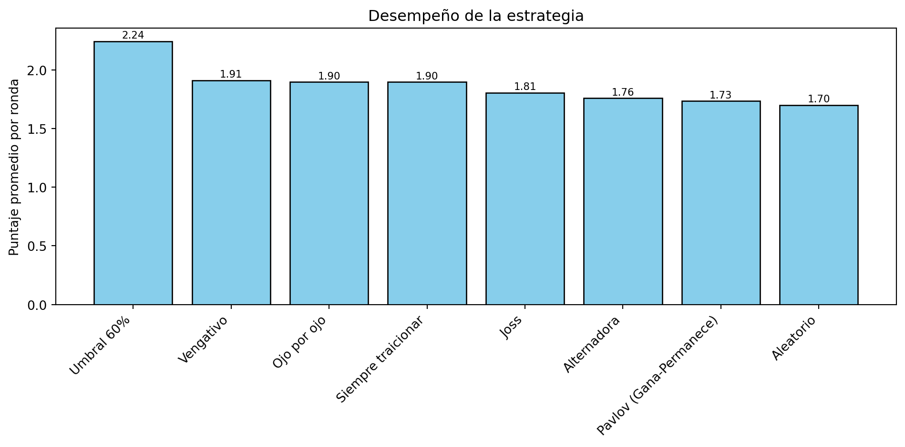

Code
#------------ Importando las librerias------------
import random
import numpy as np
import pandas as pd
import matplotlib.pyplot as plt#------------ Importando las librerias------------
import random
import numpy as np
import pandas as pd
import matplotlib.pyplot as pltAcá se presentan los parametros que serán constantes:
#------------ Estableciendo parámetros------------
# Número de rondas
N_RONDAS = 100
# Pagos
SOCIOS = 3
APROVECHADO = 5
TRAIDORES = 1
TONTO = 0
# Extras
ruido = 0.05 # probabilidad de voltear acción elegida. Ingresar valores entre [0, 1]
semilla = 40 # para funciones con aleatoriedad
# Acciones
C = "C" # cooperar
T = "T" # traicionar
# Matriz de pagos
PAGOS = {
(C, C): (SOCIOS, SOCIOS),
(C, T): (TONTO, APROVECHADO),
(T, C): (APROVECHADO, TONTO),
(T, T): (TRAIDORES, TRAIDORES)}Podemos ver la creación de las clases, tenemos padres e hijos.
### ------------ Estableciendo las clases, padres y hijos ------------
# Clase padres
class Estrategia:
nombre = "base"
def reiniciar(self): # Reinicia la estrategia jugada
return None
def decidir(self, mi_historial, historial_rival):
raise NotImplementedError("Implementa decidir() en la subclase.")
# Clase hijos: 10 estrategias, 10 jugadores:
class OjoPorOjo(Estrategia):
nombre = "Ojo por ojo"
def decidir(self, mi_historial, historial_rival):
# Primera ronda coopera, luego copia la última decisión del rival
if len(historial_rival) == 0:
return C
else:
return historial_rival[-1]
class OjoPorDosOjos(Estrategia):
nombre = "Ojo por dos ojos"
# Solo traiciona si el rival traicionó dos veces seguidas (da espacio a que no hayan represalias ante errores de comunicación: ruido, malinterpretaciones )
def decidir(self, mi_historial, historial_rival):
# Primera ronda coopera
if len(historial_rival) < 2:
return C
if (historial_rival[-1] == T) and (historial_rival[-2] == T):
return T
return C
class SiempreCooperar(Estrategia):
nombre = "Siempre cooperar"
def decidir(self, mi_historial, historial_rival):
return C
class SiempreTraicionar(Estrategia):
nombre = "Siempre traicionar"
def decidir(self, mi_historial, historial_rival):
return T
class Aleatorio(Estrategia):
nombre = "Aleatorio"
def decidir(self, mi_historial, historial_rival):
r = random.random()
if r < 0.50:
return C
else:
return T
class Vengativo(Estrategia):
nombre = "Vengativo" # Si lo traicionan una vez, traicionará para siempre
def decidir(self, mi_historial, historial_rival):
if len(historial_rival) == 0:
return C
conteo_traiciones = 0
for accion in historial_rival:
if accion == T:
conteo_traiciones = conteo_traiciones + 1
if conteo_traiciones > 0:
return T
else:
return C
class Pavlov(Estrategia):
nombre = "Pavlov (Gana-Permanece)"
# Repetir la acción anterior si el pago fue APROVECHADO = 5 o SOCIOS = 3
# Cambiar la acción anterior si el pago fue TRAIDORES = 1 o TONTO = 0
def decidir(self, mi_historial, historial_rival):
if len(mi_historial) == 0:
return C
accion_mia_prev = mi_historial[-1]
accion_rival_prev = historial_rival[-1]
# Cambiar acción
if (accion_mia_prev == T) and (accion_rival_prev == T):
return C
if (accion_mia_prev == C) and (accion_rival_prev == T):
return T
# Mantener acción
if (accion_mia_prev == C) and (accion_rival_prev == C):
return C
if (accion_mia_prev == T) and (accion_rival_prev == C):
return T
class Alternadora(Estrategia):
nombre = "Alternadora"
def decidir(self, mi_historial, historial_rival): # Alterna cooperar y traicionar
return C if len(mi_historial) % 2 == 0 else T
class Joss(Estrategia):
nombre = "Joss" # Ojo por ojo con tentación de traicionar
def __init__(self, p=0.10): # probabilidad de traicionar de 10.0%
self.p = p # probabilidad de traicionar aleatoriamente cuando tocaría cooperar
def decidir(self, mi_historial, historial_rival):
# Actúa como Ojo por ojo
if len(historial_rival) == 0:
return C
accion = historial_rival[-1]
# Cambia a traición con prob p aunque debiera cooperar según ojo por ojo
if accion == C:
if random.random() < self.p:
return T
return accion
class Umbral60(Estrategia):
nombre = "Umbral 60%"
def decidir(self, mi_historial, historial_rival): # Si el rival ha cooperado en más de 60% de las jugadas, coopera, si no traiciona
if len(historial_rival) == 0:
return C # Empieza cooperando
cooperaciones = historial_rival.count(C)
p = cooperaciones / len(historial_rival)
return C if p > 0.60 else T
class TraidorCada7(Estrategia):
nombre = "Traiciona cada 7" # Cada siete turnos traiciona, de lo contrario juega Ojo por Ojo
def decidir(self, mi_historial, historial_rival):
turno = len(mi_historial) + 1
if turno % 7 == 0:
return T
return historial_rival[-1]Aplicación de ruido
# Jugadas con opción de ruido de comunicación
def aplicar_ruido(accion, prob:float, rng):
# Con una probabilidad elegida (5.0%, por ejemplo), el jugador escoge la acción contraria a la que normalmente su estrategia le dicta.
# Objetivo: simular mejor el mundo real en que, por problemas de comunicación, una acción se puede malinterpretar. Analizar cómo se
# comportan estrategias en ambientes con imperfección.
prob = float(prob)
if prob == 0.0:
return accion
# Voltea decisión con probabilidad p
return (C if accion == T else T) if rng.random() < prob else accionJuego entre dos jugadores o estrategias distintas
def jugar_partida(j1: Estrategia, j2: Estrategia, n=N_RONDAS, prob_ruido=ruido):
# Reiniciando por si las estrategias ya tenían alguna decición tomada.
j1.reiniciar()
j2.reiniciar()
# Devuelve un número aleatorio pero que es fijo para cada corrida que se haga.
# Se podría decir que es una aleatoridad controlada
rng = random.Random(semilla)
# Listas vacias y contadores en 0
hist1 = []
hist2 = []
pagos_lista = []
suma1 = 0
suma2 = 0
# Ciclo for para las n rondas
for i in range(n):
# Toma de deciones, acciones de cada jugador
a1 = j1.decidir(hist1, hist2)
a2 = j2.decidir(hist2, hist1)
# Aplicación de ruido
a1 = aplicar_ruido(a1, prob_ruido, rng)
a2 = aplicar_ruido(a2, prob_ruido, rng)
# Calculando lo pagos con base a las acciones tomadas.
(p1, p2) = PAGOS[(a1, a2)]
# Añadiendo al historial
pagos_lista.append((p1, p2))
hist1.append(a1)
hist2.append(a2)
# Sumando pagos
suma1 = suma1 + p1
suma2 = suma2 + p2
# Promedio de pupagos para cada jugador al final del partido
prom1 = suma1 / n
prom2 = suma2 / n
# retorno
return {
"pagos": pagos_lista,
"promedios": (prom1, prom2),
"hist1": hist1,
"hist2": hist2,
}# Creando 3 estrategias
j1 = OjoPorOjo()
j2 = OjoPorDosOjos()
j3 = Aleatorio()
# Creamos un diccionario de estrategia o jugadores y otro diccionario para los nombres.
# Esto nos servira adelante.
jugadores = {1: j1, 2: j2, 3: j3}
nombres_jugadores = {1: j1.nombre, 2: j2.nombre, 3: j3.nombre}
# Ciclo for para determinar los juegos posibles de cada dos jugadores
for i in range(1,3+1):
for j in range(1,3+1):
juego =jugar_partida(jugadores[i], jugadores[j], n=N_RONDAS, prob_ruido=ruido)
print(f"J{i} ({nombres_jugadores[i]}) vs J{j} ({nombres_jugadores[j]}):")
print(f"Primeros 10 pagos:", juego["pagos"][:10])
print(f"Promedio de pagos: {juego["promedios"]}")
print()J1 (Ojo por ojo) vs J1 (Ojo por ojo):
Primeros 10 pagos: [(3, 3), (5, 0), (0, 5), (5, 0), (0, 5), (3, 3), (3, 3), (3, 3), (3, 3), (3, 3)]
Promedio de pagos: (2.67, 2.67)
J1 (Ojo por ojo) vs J2 (Ojo por dos ojos):
Primeros 10 pagos: [(3, 3), (5, 0), (3, 3), (3, 3), (3, 3), (5, 0), (3, 3), (3, 3), (3, 3), (3, 3)]
Promedio de pagos: (3.07, 2.72)
J1 (Ojo por ojo) vs J3 (Aleatorio):
Primeros 10 pagos: [(3, 3), (5, 0), (0, 5), (5, 0), (0, 5), (0, 5), (5, 0), (0, 5), (5, 0), (3, 3)]
Promedio de pagos: (2.46, 2.21)
J2 (Ojo por dos ojos) vs J1 (Ojo por ojo):
Primeros 10 pagos: [(3, 3), (5, 0), (0, 5), (3, 3), (3, 3), (5, 0), (0, 5), (3, 3), (3, 3), (3, 3)]
Promedio de pagos: (2.72, 3.02)
J2 (Ojo por dos ojos) vs J2 (Ojo por dos ojos):
Primeros 10 pagos: [(3, 3), (5, 0), (3, 3), (3, 3), (3, 3), (5, 0), (3, 3), (3, 3), (3, 3), (3, 3)]
Promedio de pagos: (3.0, 2.85)
J2 (Ojo por dos ojos) vs J3 (Aleatorio):
Primeros 10 pagos: [(3, 3), (1, 1), (3, 3), (3, 3), (0, 5), (5, 0), (0, 5), (0, 5), (5, 0), (3, 3)]
Promedio de pagos: (2.03, 3.08)
J3 (Aleatorio) vs J1 (Ojo por ojo):
Primeros 10 pagos: [(5, 0), (0, 5), (5, 0), (0, 5), (3, 3), (5, 0), (0, 5), (5, 0), (1, 1), (0, 5)]
Promedio de pagos: (2.21, 2.31)
J3 (Aleatorio) vs J2 (Ojo por dos ojos):
Primeros 10 pagos: [(5, 0), (3, 3), (5, 0), (3, 3), (3, 3), (5, 0), (3, 3), (3, 3), (3, 3), (3, 3)]
Promedio de pagos: (2.98, 1.88)
J3 (Aleatorio) vs J3 (Aleatorio):
Primeros 10 pagos: [(3, 3), (5, 0), (1, 1), (0, 5), (1, 1), (5, 0), (0, 5), (1, 1), (1, 1), (0, 5)]
Promedio de pagos: (1.94, 2.34)
TORNEO DE JUGADORES ¿Quién ganará?
Acá se detalla cómo se genera una matriz de resultado de los pagos para todos los jugadores (o estrategias)
# Definición de una función general para todas las estrategias.
def torneo_resultados(estrategias):
# Creación de la lista con los nombres de las estrategias
nombres = [e.nombre for e in estrategias]
# Creación de DataFrame con Nan
M = pd.DataFrame(np.nan, index=nombres, columns=nombres)
# Ciclo for para los juegos posibles
for i, ei in enumerate(estrategias):
for j, ej in enumerate(estrategias):
# lo anterior lo comentamos para que también apareciera la estragias vs si misma
# if i == j:
# continue
# Los promedios de los pagos para los juegos
prom_i, prom_j = jugar_partida(ei, ej, n=N_RONDAS, prob_ruido=ruido)["promedios"]
# Asignamos promedio del jugador i contra j al DataFrame
M.iat[i, j] = prom_i
# Impresión de la matriz
print("==================================")
print("=== Matriz de pagos promedios ===")
print("==================================")
print("Filas vs columnas")
return M
# Acá vamos a correr el juego para las distintas estrategias e imprimir.
estrategias = [OjoPorOjo(), SiempreTraicionar(), Aleatorio(), Vengativo(), Joss(), Umbral60(), Pavlov(), Alternadora()]
Resultados =torneo_resultados(estrategias)
Resultados==================================
=== Matriz de pagos promedios ===
==================================
Filas vs columnas| Ojo por ojo | Siempre traicionar | Aleatorio | Vengativo | Joss | Umbral 60% | Pavlov (Gana-Permanece) | Alternadora | |
|---|---|---|---|---|---|---|---|---|
| Ojo por ojo | 2.67 | 1.10 | 2.32 | 1.17 | 1.87 | 1.26 | 2.35 | 2.43 |
| Siempre traicionar | 1.55 | 1.15 | 2.81 | 1.19 | 1.51 | 1.19 | 2.90 | 2.87 |
| Aleatorio | 2.35 | 0.71 | 2.38 | 0.74 | 2.09 | 0.80 | 2.36 | 2.16 |
| Vengativo | 1.57 | 1.14 | 2.90 | 1.21 | 1.53 | 1.25 | 2.82 | 2.86 |
| Joss | 2.15 | 1.10 | 2.44 | 1.18 | 1.64 | 1.27 | 2.23 | 2.43 |
| Umbral 60% | 2.73 | 1.14 | 2.62 | 1.20 | 1.56 | 2.97 | 2.87 | 2.85 |
| Pavlov (Gana-Permanece) | 2.15 | 0.71 | 2.60 | 0.79 | 1.97 | 0.79 | 2.67 | 2.19 |
| Alternadora | 2.43 | 0.70 | 2.01 | 0.83 | 2.24 | 1.46 | 2.34 | 2.06 |
Gráfica resumen
#
# Cálculo de promedios para una estrategias vs todas las otras y ranking ===
promedio_por_estrategia = Resultados.mean(axis=1, skipna=True)
ranking = promedio_por_estrategia.sort_values(ascending=False)
# Mostramos el ranking como un DataDFrame
tabla = pd.DataFrame({
"Estrategia": ranking.index,
"Promedio final": ranking.values
})
print("===========================================")
print("Promedios finales")
print("===========================================")
print(tabla)
#Gráfica
print("\n==================================================================================================")
print("Grafica de promedios")
print("==================================================================================================")
plt.figure(figsize=(10, 5))
plt.bar(ranking.index, ranking.values, color='skyblue', edgecolor='black')
plt.ylabel("Puntaje promedio por ronda")
plt.title("Desempeño de la estrategia")
plt.xticks(rotation=45, ha='right')
# Etiquetas encima de las barras
for i, valor in enumerate(ranking.values):
plt.text(i, valor + 0.01, f"{valor:.2f}", ha='center', va='bottom', fontsize=8)
plt.tight_layout()
plt.show()===========================================
Promedios finales
===========================================
Estrategia Promedio final
0 Umbral 60% 2.24250
1 Vengativo 1.91000
2 Ojo por ojo 1.89625
3 Siempre traicionar 1.89625
4 Joss 1.80500
5 Alternadora 1.75875
6 Pavlov (Gana-Permanece) 1.73375
7 Aleatorio 1.69875
==================================================================================================
Grafica de promedios
==================================================================================================